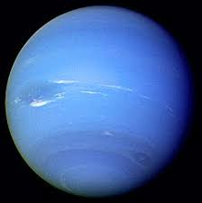

Planet Neptunus adalah planet kedelapan dan terjauh dari Matahari dalam tata surya kita. Neptunus memiliki warna biru yang indah, yang disebabkan oleh atmosfer yang mengandung metana.
Neptunus memiliki angin yang sangat kuat dan cepat di atmosfernya, yang menciptakan sistem awan yang menarik. Planet ini juga memiliki banyak satelit alami, termasuk Triton yang merupakan satelit alami terbesar dan satu-satunya yang bergerak dalam arah berlawanan dengan rotasi planet.